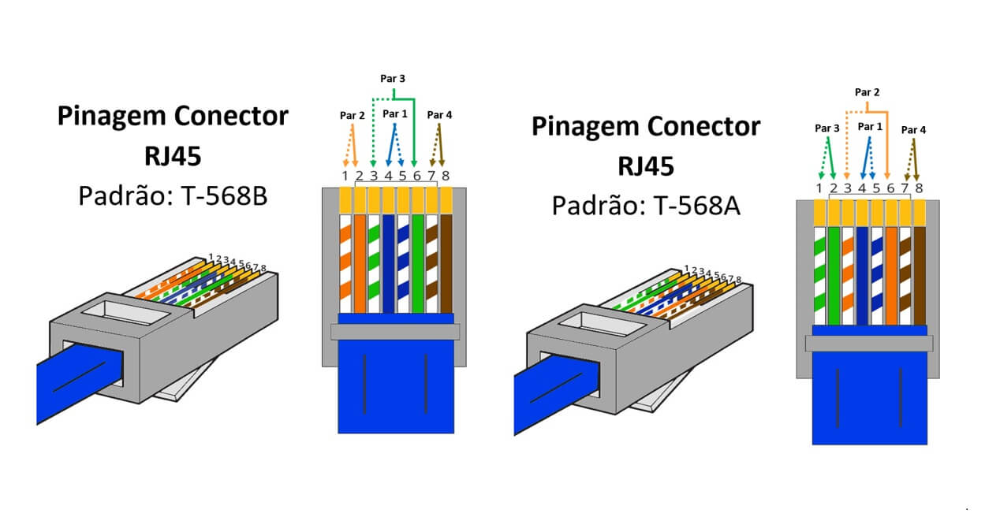
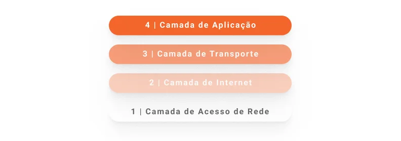

.svg)
Elementos, Componentes e Configuração de Rede Interna
O servidor web é inserido dentro de uma rede configurada de maneira eficiente para garantir a comunicação entre todos os elementos da infraestrutura de TI.
Configuração dos Servidores
Na configuração da rede interna, utilizamos servidores de Domínio (DNS), Servidor HTTP para comunicação web e servidores DHCP para atribuição dinâmica de IPs.
Serviço de DNS
O DNS (Domain Name System) é um sistema de nomes que traduz nomes de domínio em endereços IP para facilitar o acesso a recursos em redes e servidores.
Servidor HTTP
O servidor HTTP é responsável por servir páginas web para os navegadores, fornecendo conteúdo a partir de requisições feitas pelos clientes (usuários).
Servidor DHCP
O servidor DHCP (Dynamic Host Configuration Protocol) atribui dinamicamente endereços IP aos dispositivos na rede, permitindo a comunicação e o acesso aos recursos da rede sem a necessidade de configuração manual.
Equipamentos Aplicados em Redes
Os equipamentos utilizados na rede incluem roteadores, switches e cabos de rede. Cada um desses elementos desempenha um papel fundamental para garantir a conectividade e a comunicação eficiente dentro da rede interna.
Foto da Crimpagem e Cabo de Rede
Conceitos Importantes
Conceito de Servidor
Um servidor é um sistema computacional dedicado a fornecer recursos, dados ou serviços para outros computadores, chamados de clientes, dentro de uma rede.
O que é DNS?
O DNS (Domain Name System) é um sistema de nomenclatura hierárquico usado para resolver nomes de domínio (como www.exemplo.com) em endereços IP (como 192.168.0.1), que são utilizados para localizar servidores na internet ou na rede local.
O que é HTTP?
O HTTP (Hypertext Transfer Protocol) é um protocolo de comunicação usado para transferência de dados na web, sendo fundamental para a exibição de páginas da web no navegador do usuário.
O que é DHCP?
O DHCP (Dynamic Host Configuration Protocol) é um protocolo que permite a um servidor fornecer automaticamente configurações de rede, como o endereço IP, para os dispositivos de uma rede local.
Modelo OSI
O Modelo OSI (Open Systems Interconnection) é uma referência para entender como os sistemas de comunicação em redes devem se comportar, dividindo as operações de rede em 7 camadas: Física, Enlace de Dados, Rede, Transporte, Sessão, Apresentação e Aplicação.

Conceito de TCP/IP
O modelo TCP/IP (Transmission Control Protocol/Internet Protocol) é a base para a comunicação na internet, sendo composto por quatro camadas: Link, Internet, Transporte e Aplicação.
